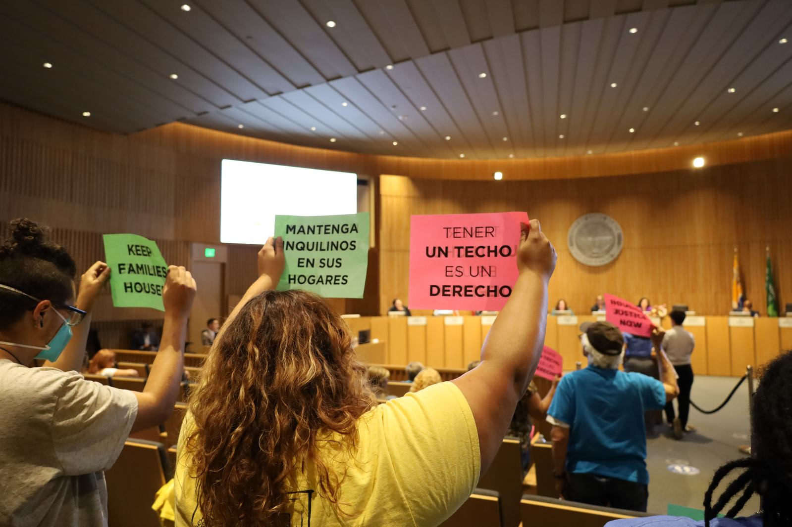
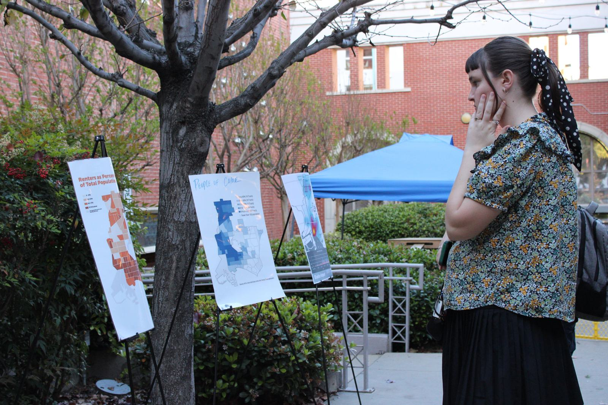
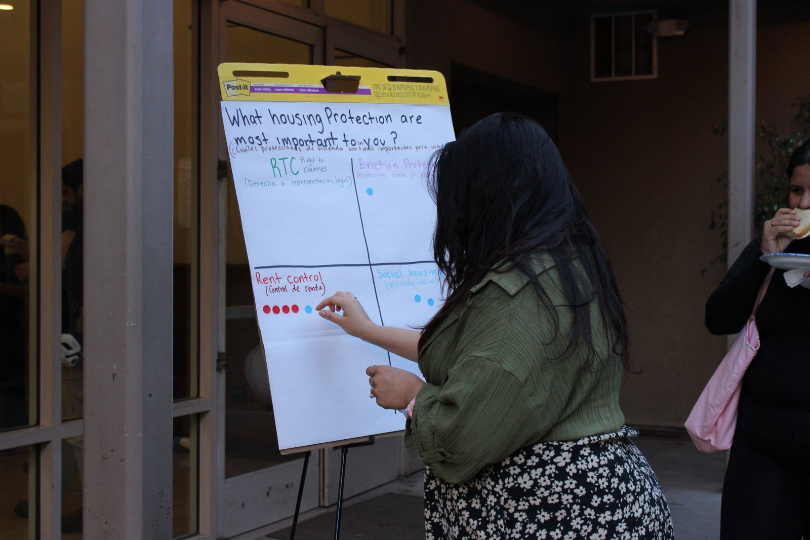

Just Cause campaign
Stable housing for all Long Beach families.
Renters are only guaranteed eviction protections after their first 12 months — and loopholes leave many families at risk even then.
Purpose
Close the loopholes.
In Long Beach, renters are only guaranteed eviction protections after their first 12 months of tenancy, and even then, many are still left unprotected. Loopholes in the current ordinance continue to put families at risk of displacement for reasons beyond their control.
To ensure housing stability for all families, the City must make urgent updates to the Just Cause Ordinance that meet the needs of our communities.

Why now
Nearly 60% of Long Beach residents are renters.
Many face the constant threat of displacement due to unjust evictions, rising rents, and wages that have not kept pace with inflation.

Homelessness
Long Beach is facing a growing homelessness crisis driven by financial hardship and eviction. The 2025 Point in Time Count shows a significant number of residents are losing their housing from loss of income or eviction. As of 2025, the number of unhoused individuals in Long Beach is 90% higher than in 2019.

High cost of living
A 2022 analysis by Long Beach Residents Empowered (LiBRE) found that 52.4% of Long Beach renters are rent burdened, spending over 30% of their income on housing. Black renters experience the highest rates of rent burden in the city, limiting families’ ability to afford other everyday essentials.

Federal budget cuts
Federal budget cuts are expected to create major deficits for the City in the upcoming years. These reductions threaten the stability of public services, reducing access to housing support, health care, and food assistance.

Lack of protections
These outcomes are not simply a result of market trends; they reflect unresolved policy gaps. Since April 2023, Long Beach has recorded 164 substantial remodel evictions — more than the City of Los Angeles recorded before eliminating the provision altogether. Weak enforcement has earned Long Beach a score of 2.5 out of 9 on the Tenant Bill of Rights, compared with 7.5 for Los Angeles.

Upcoming events
As Long Beach prepares to host major international events, signs of worsening housing conditions become visible. A USC analysis found a rise in evictions following the announcement of Olympic events, particularly in neighborhoods near future venues.
These conditions make one thing clear: without bold action, the housing crisis will grow. Closing policy gaps is essential to prevent further displacement and keep families housed.
Policy demands
Strengthen the Just Cause Ordinance.
We’re calling on the City of Long Beach to close harmful loopholes and expand protections by:
Eliminate evictions for “substantial remodeling”
Right now, landlords can use “substantial remodeling” as a reason to evict tenants even if a unit does not require necessary or major repairs. This loophole lets landlords use minor upgrades as an excuse to displace tenants. We’re calling for the removal of “substantial remodeling” as a legal basis for eviction — residents should benefit from any repairs or updates to their unit. (A substantial remodel is a no-fault eviction that allows a landlord to end a tenancy if they’re replacing a major system or working with dangerous materials, the work will take over 30 days, and it is unsafe to live there.)
Set reasonable nonpayment thresholds
In Long Beach, a tenant can be evicted for falling behind on rent by as little as a dollar. This makes eviction the first response instead of the last, even when a tenant has paid consistently for years. This campaign calls for a threshold for eviction due to nonpayment at one month of Fair Market Rent, so households facing temporary hardship have time to stabilize. (A nonpayment threshold is the minimum amount of unpaid rent that can cause an eviction.)
Make Just Cause protections universal
Many renters in Long Beach, such as those living in single-family homes, are excluded from Just Cause protections and can be evicted for any reason, at any time. We’re calling on the City to apply Just Cause protections to all renters, regardless of unit type, landlord, or how long they have lived there.
Match County relocation assistance
Long Beach’s relocation assistance has not kept up with the real cost of moving into a new home, and landlords can apply it toward a tenant’s last month of rent without the tenant’s consent — leaving renters without cash for a deposit or first month’s rent. This campaign calls for aligning amounts with LA County standards, which adjust for inflation, ensuring funds go directly to tenants, and eliminating rent credit in place of cash.
Stories from Long Beach tenants
Why we’re fighting.
This campaign is rooted in the real experiences of our community.
For over six months, my landlord abused tenant rights and put my health at risk. Despite reaching out to every department and city official, I received little to no help to stop the abuse I was facing daily. The systems I thought were meant to protect tenants did not step in or do their jobs.
The City approved the permit, but the landlord never filed the correct substantial remodel forms to displace me. I was then given a notice stating that the work did not qualify for tenant displacement and that the 60-day notice was not valid. Despite this, my landlord never rescinded the 60-day notice.
At a recent Housing Department meeting, the city reported 164 evictions from substantial remodeling since 2023. But cases like mine would go unreported — either because of inaccurate data collection, or because landlords have learned how to leverage the City’s negligence to scare tenants into self-eviction.
Endorse Just Cause
Organizations: add your name to the list of groups fighting for stronger protections.
See endorsementsJoin our efforts
Help ensure housing stability for all Long Beach families.
Get involved (opens in a new tab)See where evictions and code violations concentrate on our Eviction Dashboard and Code Violations maps.